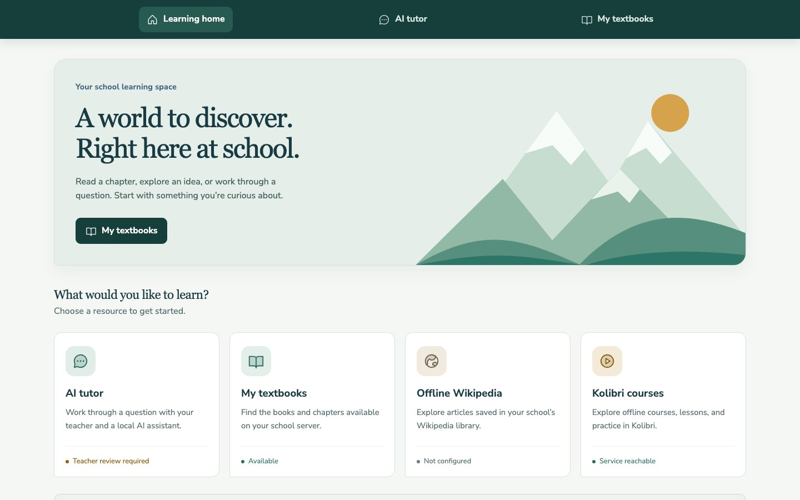
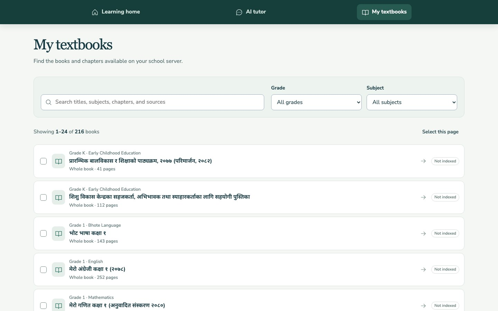
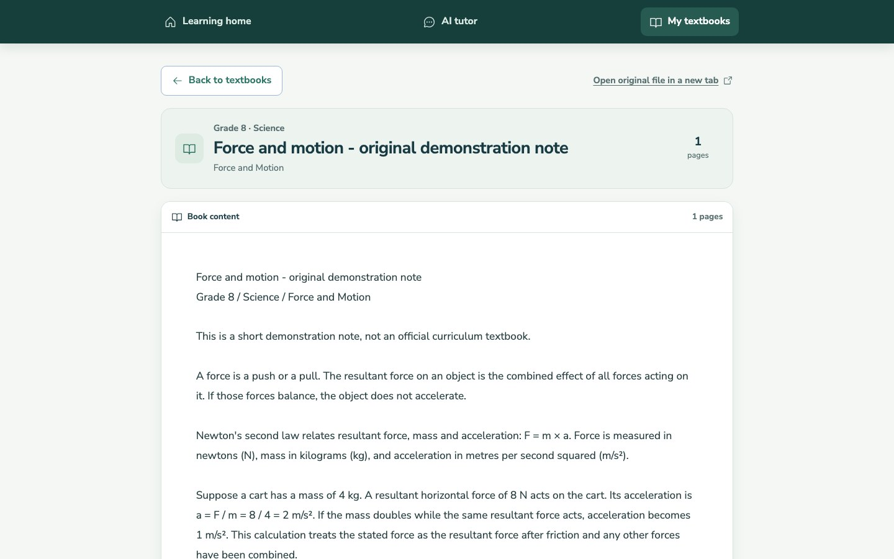
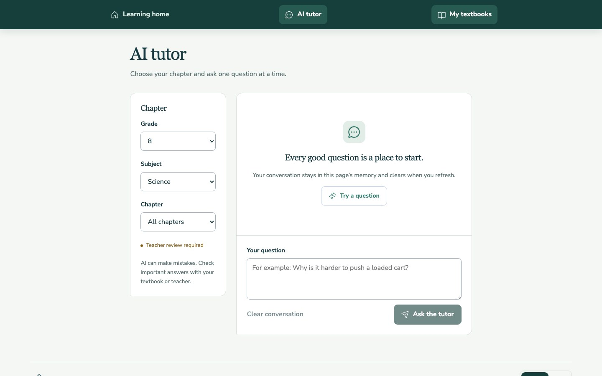

From a school library to a question worth checking.
Books and installed lessons can stay on the school network. The tutor is optional. The portal and Kolibri demo facility now run locally; tutor retrieval and course imports are still to be completed.
A simple path, with each handoff visible.
Teachers choose the material. The student portal serves it locally. The tutor adds a separate, reviewable path for questions.
-
Staff imports only school-reviewed material.
An authorized staff member imports a PDF or text file. The API stores its catalog details and page-aware text in the school's data volume. Copyright and curriculum approval happen before import.
Import flow tested locally -
Students open the portal over school Wi-Fi.
The student browser connects to the local portal. The private prototype catalog has 216 CDC PDFs assigned across Kindergarten through Grade 12. Kolibri is reachable as a separate service, but its channels still need to be imported.
Portal and file access tested -
Students ask when the school enables the tutor.
With local embeddings and Qdrant configured, the API can search approved textbook passages. Chat can use local Ollama or a configured OpenAI-compatible provider. A hosted provider receives the question, recent conversation, and retrieved excerpts.
AI disabled by default · Qdrant unconfigured locally -
Sources are visible, and a no-match answer says so.
Retrieved pages appear with the answer for review. If no passage matches, the tutor labels its response as a general explanation instead of implying it came from a textbook. Teachers remain responsible for checking accuracy and language quality.
Source and no-match states covered by tests
Scroll through the screens. Play the whole run.
The frame follows the story as you read. The recording is a real local prototype session, not a school deployment.





-
Start with resources on the school server.
The home screen shows the local connection and which optional services are reachable or still unconfigured. Kolibri is now reachable from the portal.
-
Browse 216 local K–12 titles.
Search by title, subject, or chapter, filter by grade and subject, paginate, and select books. The catalog stays clear until a student opens a title.
-
Open a title in its own reading screen.
Clicking a catalog entry opens its own route with document details and readable content. The screenshot uses the repository's CC0 demonstration note, not a private CDC PDF.
-
Choose a grade, subject, and chapter.
The interface is ready for questions, but AI remains disabled and the local book catalog has not been indexed. That boundary is visible in the current setup.
-
Kolibri is provisioned; course import is next.
The local facility is configured and reachable from the portal. Kolibri keeps its own accounts and course progress; no channels or learner accounts have been imported yet.
Watch the updated local prototype flow
Silent capture of the current portal, catalog, CC0 sample reader, tutor setup, and Kolibri channel manager. Private K–12 PDFs are not included in this public website.
Local access depends on what was prepared.
Can stay on the school network
- The portal and books already imported into its local catalog.
- Kolibri channels already installed on the school server.
- Chat handled by a reachable local Ollama service, when enabled.
Needs setup or an internet connection
- Hosted AI calls and downloading new material from online providers.
- Local tutor retrieval until Ollama embeddings and Qdrant are configured.
- Kolibri lessons until staff import approved channels.
Offline readiness is a deployment check, not a property of the word “offline-first.” Every required book, lesson, service, and device still needs a WAN-off test at school.
See what works today and what still needs proof.
The project status page separates software checks from school acceptance.